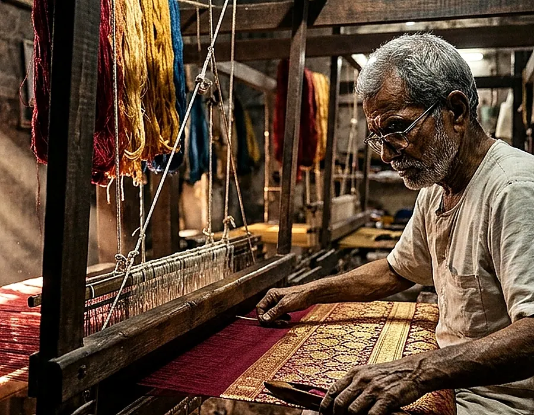
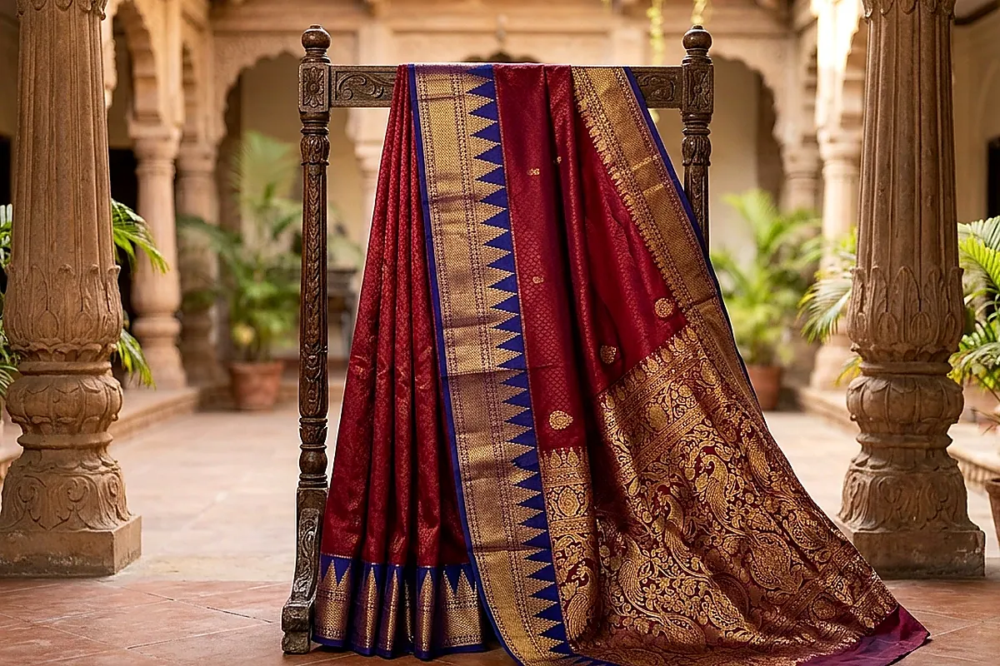
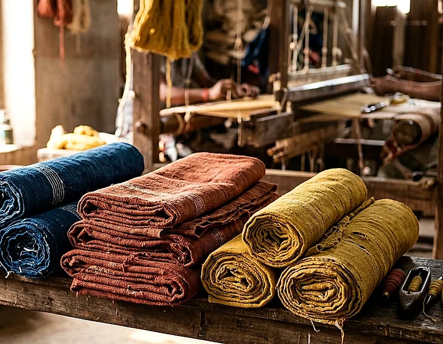

The loom and its preparation
Warp setting, tension and design planning contribute significantly to the making of a woven textile.
A technique-led look at weaving traditions. These are educational stories—not fictional artisan interviews or claimed commercial partnerships.

Six chapters explore preparation, structure, borders, texture, care and the journey from woven cloth to everyday life.
The warp is held in tension while the weft passes across it. Their interlacing creates the structure of a fabric, from airy plain cloth to carefully patterned pieces.
Read story ↗From winding and warping to setting the yarn, preparation has a direct effect on how weaving progresses.
Read story ↗Borders can change the feel of a saree, a stole or a textile length—visually and structurally.
Read story ↗Texture, slubs, sheen, body and drape are practical clues for choosing a textile.
Read story ↗Care is not an afterthought: it is part of how a treasured cloth stays wearable and useful.
Read story ↗
A handwoven textile is made for use: how drape, durability and care guide what a woven length becomes, from clothing to living spaces.
Read story ↗
Textile traditions are varied, and specific artisan biographies, workshop partnerships, and certified claims need genuine evidence. NOOLMAYAM’s pages focus on process education until real verified stories can be added.
Explore our philosophyThere is no single Indian weaving tradition. Each approach reflects particular tools, practices and regional design vocabularies.
Warp setting, tension and design planning contribute significantly to the making of a woven textile.
Fibre, yarn count, twist and dyeing methods influence appearance and handling.
Borders, motifs and finishing are meaningful aspects to study without assuming provenance from appearance alone.